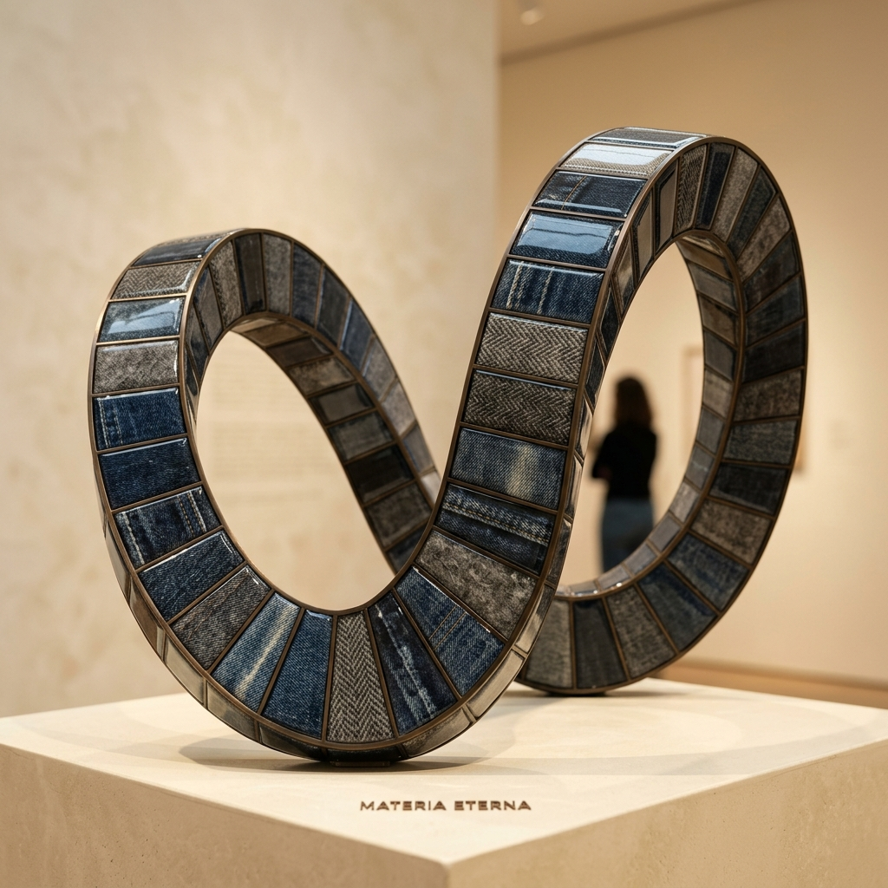
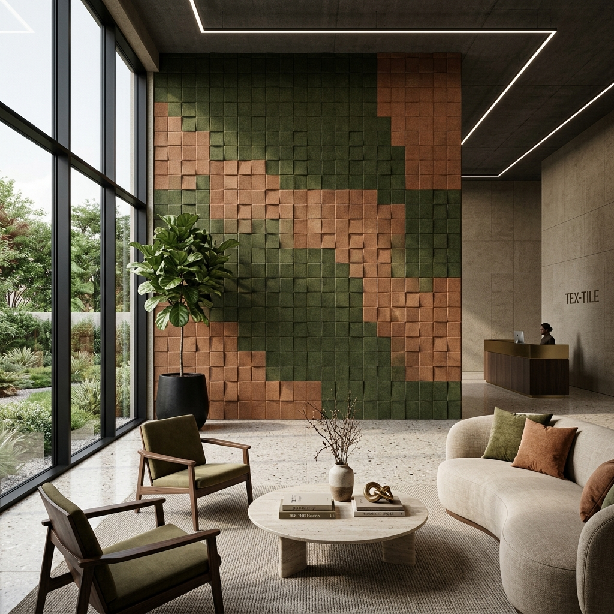
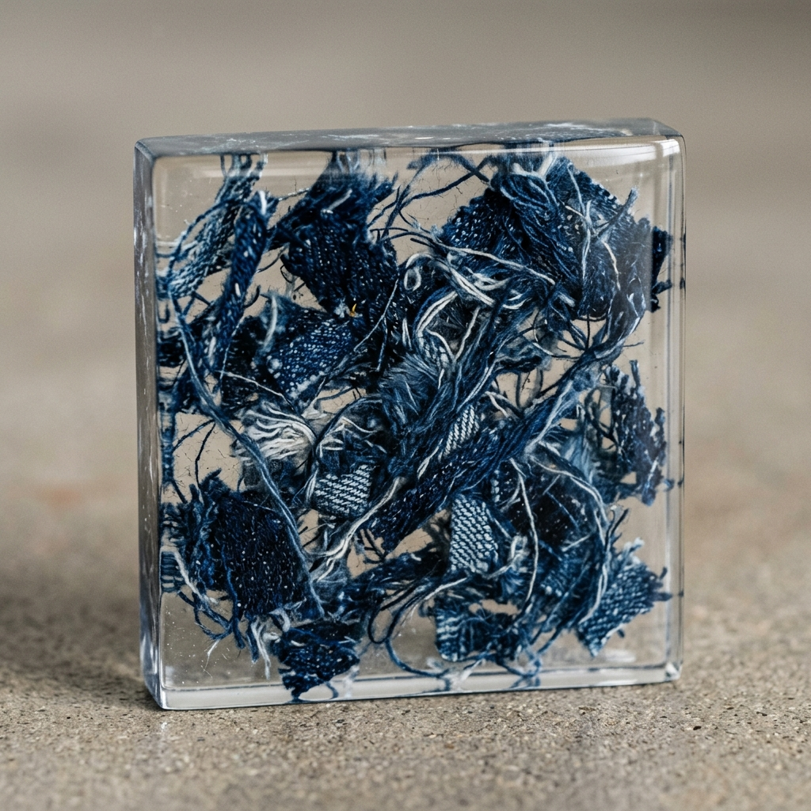
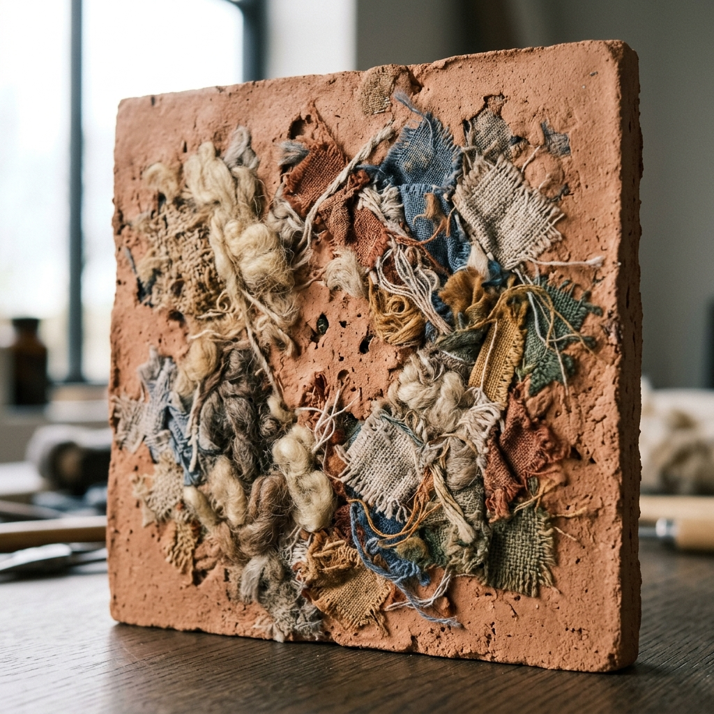

In a world of finite resources, we see infinite potential in what others discard. TEX-TILE was born from a simple question: How can we elevate textile waste into something architectural, permanent, and poetic?
Our process is a bridge between industrial circularity and artistic craftsmanship. Every tile tells a story of transformation—from forgotten fabric to crystalline structure.

Sourcing premium textile remnants from fashion houses and upholstery studios.
Deconstructing fabrics to reveal their raw fiber textures and color depth.
Artistic arrangement of fibers to create unique, non-repeating patterns.
Infusing the textile composition with high-performance bio-based resin.
Meticulous hand-polishing to achieve a glass-like or honed stone finish.

Raw indigo fibers suspended in clear resin. Deep, tectonic textures.

Organic warmth meets architectural rigidity. Neutral earthy tones.
Reflective fragments creating a dynamic play of light and depth.
Our materials are designed for versatility. From expansive wall cladding to bespoke furniture pieces, TEX-TILE brings a tactile warmth and unique visual depth to any space.
Diverted from landfills annually
Lower footprint than traditional stone
No two tiles are ever identical
We partner with architects and designers to create bespoke surfaces. Request a sample kit or discuss a custom commission.
Studio
124 Industrial Way, London
Email
hello@tex-tile.design